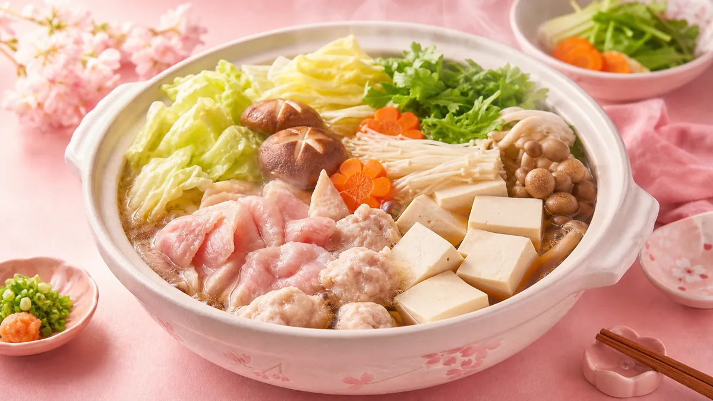

ダイエット中に鍋がおすすめな3つの理由
鍋料理はダイエット中の食事として非常に取り入れやすいメニューです。その理由を3つ整理します。
① 野菜をたっぷり食べられる
白菜・きのこ・豆腐・こんにゃくなど、低カロリーで食物繊維が豊富な食材を一度にまとめて摂れます。野菜の目標量「1日350g」を鍋1食でほぼ達成できるケースも。
② 水分と食物繊維で満腹感が続く
スープに浸った食材はかさが増え、少ないカロリーでもお腹が満たされやすくなります。食べ始めてから満腹感が出るまで約20分かかるため、ゆっくり食べる鍋はペース調整にも向いています。
③ 調理が簡単で続けやすい
食材を切って鍋に入れるだけ。調理時間は平均15〜20分。忙しい平日でも無理なく続けられます。
鍋ダイエットの基本ルール5つ
鍋を食べるだけでは効果は出ません。次の5つのポイントを意識してください。
- 野菜・きのこ・豆腐を全体の6割以上にする
- 〆の麺・ご飯は週3回までに抑える（どうしても食べたい場合は少量に）
- スープは飲み干さない（塩分過多になりやすいため、コップ1杯程度に）
- 食べる順番は野菜→タンパク質→炭水化物の順を守る
- ポン酢・ゆずこしょうなど低カロリーのたれを選ぶ（ごまだれはカロリーが高め）
🍲 ダイエット鍋スープ別カロリー＆おすすめ度 比較表
※1人前（スープ含む）の目安カロリー。食材構成によって変わります。
| スープの種類 | 目安カロリー | 塩分 | ダイエット適性 | おすすめ食材 |
|---|---|---|---|---|
| 🍋 ポン酢／だし鍋 | 約150〜200kcal | 低め | ◎ 最適 | 白菜・豆腐・鶏むね |
| 🌶 トマト鍋 | 約180〜230kcal | 中程度 | ◎ 最適 | タコ・えび・パプリカ |
| 🥬 豆乳鍋 | 約220〜280kcal | 低め | ○ 良好 | 豆腐・鮭・ほうれん草 |
| 🍜 キムチ鍋 | 約200〜260kcal | 高め | ○ 良好 | 豚もも・もやし・豆腐 |
| 🧈 バター醤油鍋 | 約350〜450kcal | 高め | △ 注意 | 量を控えめに |
| 🥛 クリーム／チーズ鍋 | 約400〜550kcal | 高め | △ 注意 | 週1回程度に |
※カロリーは食材・量により異なります。目安としてご参照ください。
ダイエット向け鍋レシピ10選
カロリーを抑えながら満足感を得やすいレシピを10種類紹介します。それぞれ1人前の目安カロリーも記載しています。
① 白菜と鶏むね肉のだし塩鍋（約160kcal）
昆布だし＋塩＋酒でシンプルに仕上げる定番鍋。鶏むね肉はタンパク質が豊富で脂質が少なく、ダイエット中の主菜として優秀です。白菜はかさが多く、食べ応えも十分。
食材（1人前）：白菜150g・鶏むね肉80g・えのき50g・豆腐100g・昆布だし300ml・塩少々
② 豆腐とわかめのポン酢鍋（約140kcal）
最もカロリーが低いシンプル鍋。わかめのミネラル・豆腐のイソフラボンを同時に摂れます。たれはポン酢＋ゆずこしょうで風味をプラス。
③ トマトと鶏むね肉のイタリアン鍋（約210kcal）
トマト缶＋コンソメ＋にんにくで洋風に。リコピンも摂れてビタミンCも豊富。パプリカ・ズッキーニを加えると彩りもよくなります。
④ 豆乳と鮭の白みそ鍋（約250kcal）
無調整豆乳＋白みそ（小さじ2）で濃厚なスープに。鮭のDHA・EPAも摂れる栄養バランスの良い一品。ほうれん草・しめじを加えると食物繊維もアップ。
⑤ キムチともやしの豚もも鍋（約220kcal）
豚もも肉（脂身少）を使えばキムチ鍋もカロリーを抑えられます。もやしは100gで約15kcalと超低カロリー。ビタミンB群も豊富で代謝サポートに。
⑥ 水炊き＋ポン酢（約170kcal）
鶏手羽元でコラーゲンたっぷりのスープを作る王道レシピ。手羽元は脂が出るため、スープの表面の脂をキッチンペーパーで取るとカロリーダウンできます。
⑦ こんにゃくと牛赤身のすき焼き風鍋（約230kcal）
砂糖の量を通常の半分にし、糸こんにゃく・しらたきを多めに入れることでカロリーを抑えたすき焼き風。牛赤身肉は鉄分補給にもなります。
⑧ 海鮮とほうれん草のあっさり塩鍋（約180kcal）
えび・ほたて・あさりなど低脂質な海鮮を使った塩ベースの鍋。海鮮のうまみがスープに溶け出し、薄味でも満足感が高い一品です。
⑨ 豆腐と野菜のカレー鍋（約200kcal）
カレー粉（小さじ1）＋鶏がらスープで作るスパイシーな鍋。カレー粉はほぼカロリーゼロで風味が豊か。食欲が落ちている日でも食べやすいです。
⑩ きのこたっぷりの和風しゃぶしゃぶ鍋（約190kcal）
しいたけ・しめじ・まいたけ・えのきの4種きのこを使った食物繊維たっぷり鍋。豚ロース薄切り（脂身少）をさっとしゃぶしゃぶして食べます。
〆をどうするか？カロリーを抑える3つの方法
鍋の〆は炭水化物が多くなりがちです。次の方法でカロリーを調整しましょう。
- ✅ しらたき麺に置き換える（100gで約6kcal）
- ✅ 雑炊にする場合はご飯を半量（50g）にする
- ✅ 〆は週3回までと決めてルーティン化する
鍋以外の食事管理も組み合わせたい方は、ダイエット献立1週間プランの記事も参考にしてみてください。毎日の食事を無理なく整えるヒントが見つかります。
鍋ダイエットを2週間続けるための実践スケジュール
「続けられるか不安」という方のために、2週間の取り入れ方の目安を紹介します。
- 1〜3日目：まずだし塩鍋・ポン酢鍋など最もシンプルなレシピから始める
- 4〜7日目：トマト鍋・豆乳鍋など味のバリエーションを増やす
- 8〜10日目：キムチ鍋・カレー鍋など食欲が出るスープに挑戦
- 11〜14日目：好みのレシピが見つかったら週3〜4回のペースで定着させる
毎日鍋にする必要はありません。週3〜4回の夕食に取り入れるだけでも食事全体のカロリーバランスが整いやすくなります。
食事管理と並行して運動も始めたい方は、朝昼晩の簡単ダイエットレシピ1週間プランも合わせてチェックしてみてください。
よくある質問
Q. 鍋ダイエットで何日くらいで変化を感じられますか？
個人差がありますが、週3〜4回の夕食を鍋に切り替えた場合、2週間ほどで食事全体のカロリーが落ち着いてきたと感じる方が多いです。体重の変化よりも先に「お腹が重くない」「むくみが減った気がする」という感覚が出やすい傾向があります。焦らず2〜4週間を目安に続けてみましょう。
Q. 鍋のスープは飲み干してもいいですか？
スープには食材のうまみと栄養が溶け出しているため少量飲むのは問題ありません。ただし、市販の鍋スープの素は1人前あたり塩分が2〜3gほど含まれるものも多く、飲み干すと塩分過多になりやすいです。コップ1杯（約150ml）程度を目安にし、残りは飲まないようにするとむくみ予防につながります。
Q. 市販の鍋スープの素を使ってもいいですか？
使っても問題ありません。選ぶ際は「1人前あたりの塩分2g以下・カロリー50kcal以下」を目安にすると比較的ヘルシーなものを選びやすいです。昆布だし・かつおだしベースのシンプルなものや、トマトベースのものが低カロリーな傾向があります。